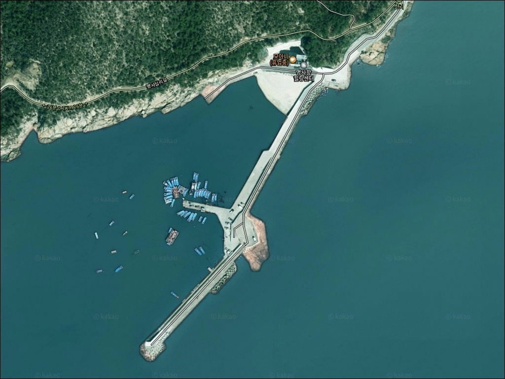
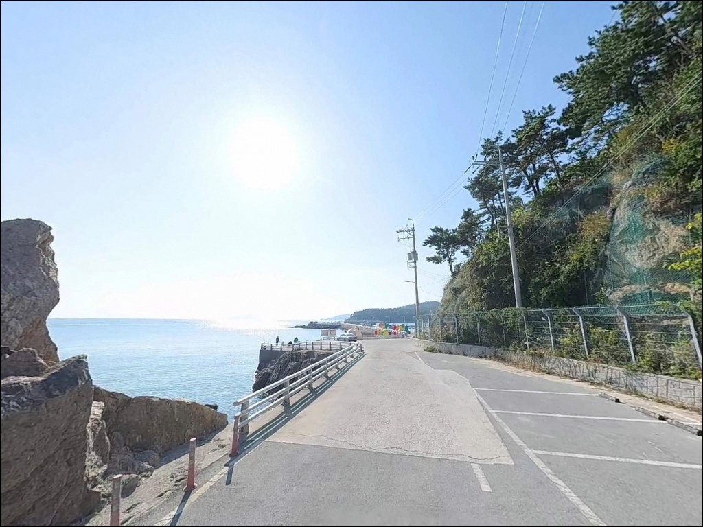
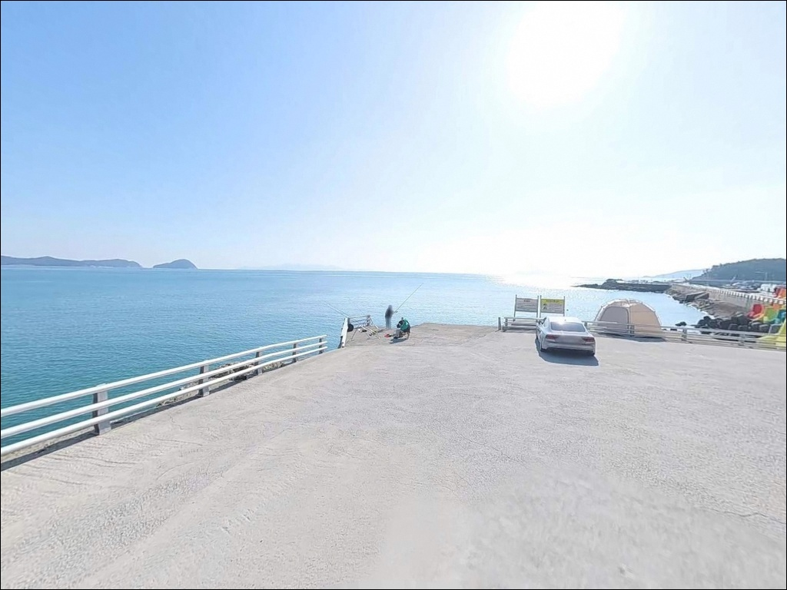
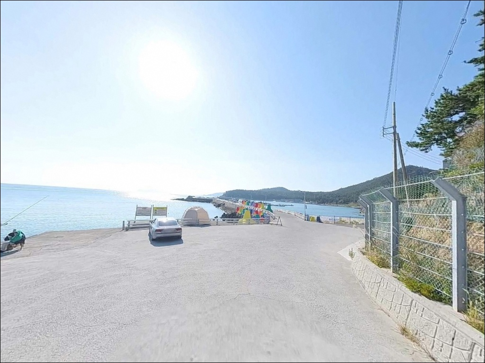
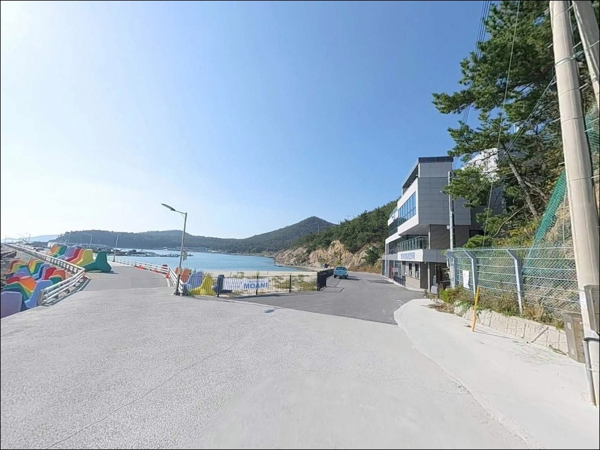
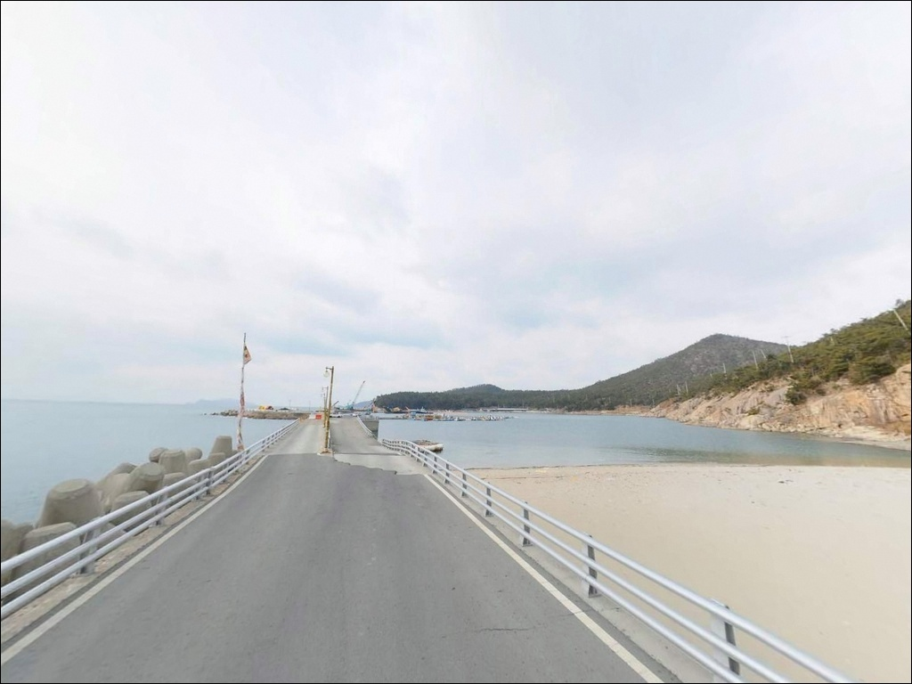
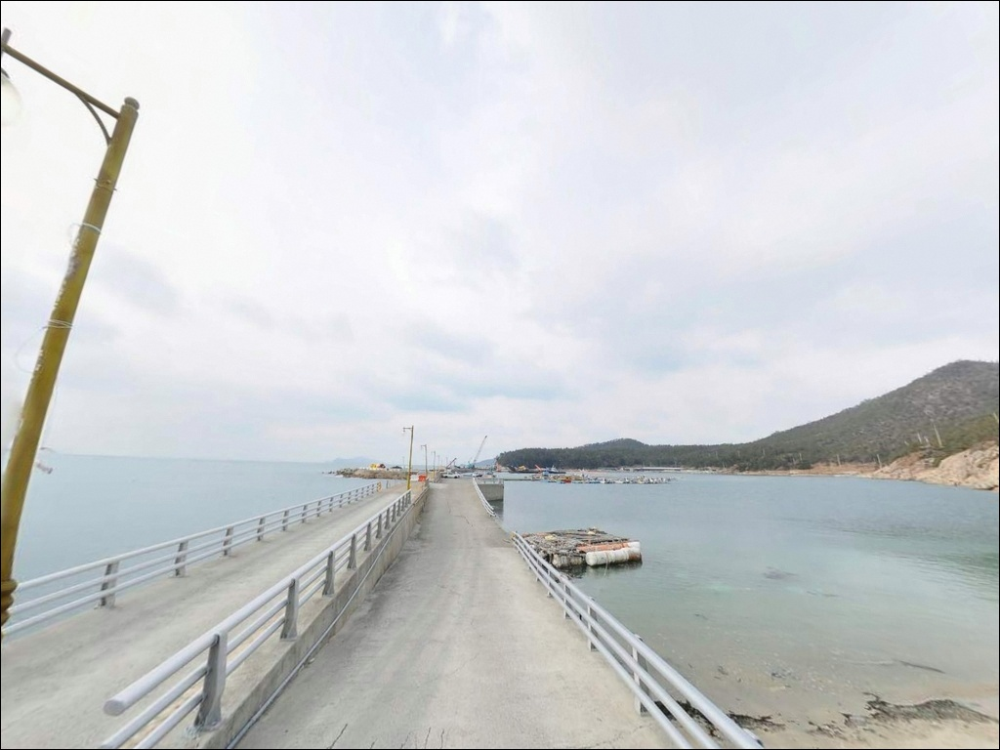
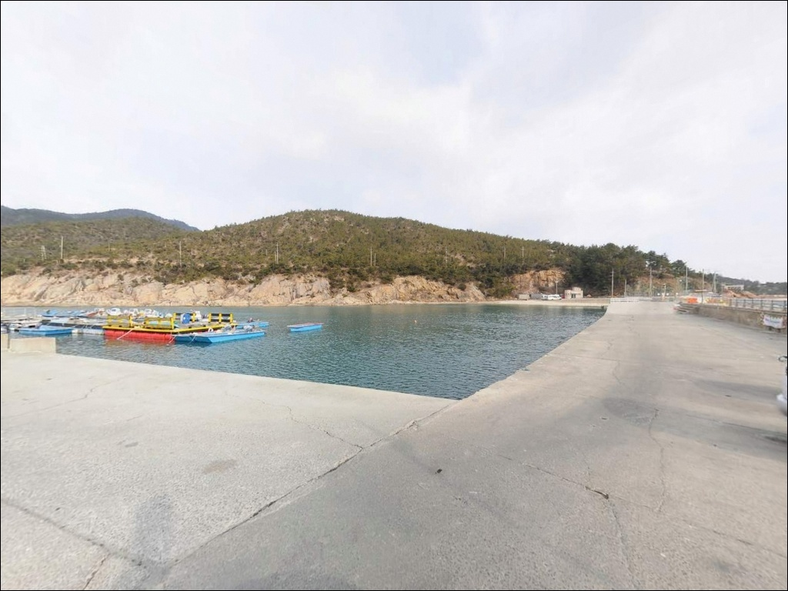
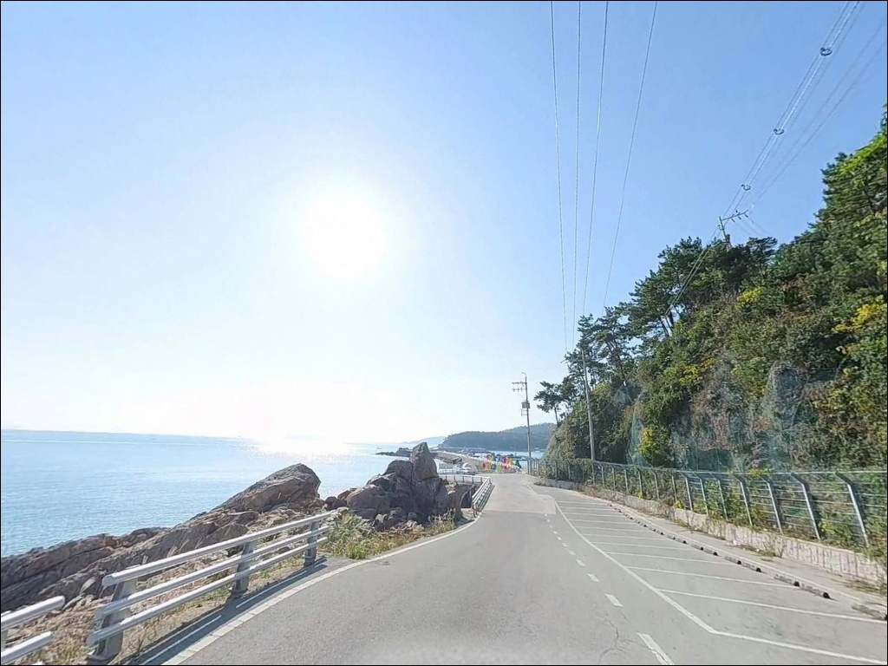

명사항, 명사방파제, 신지도 전남 완도군 손맛과 캠핑 감성 다 챙기는 바다 차박 낚시 명당
이 페이지에는 광고(제휴 링크 포함)가 있으며, 광고 링크를 통해 구매하면 운영자가 판매 수익 또는 수수료를 받을 수 있습니다. 포인트 사진: 카카오맵 스카이뷰·로드뷰. 이 페이지의 지도·사진 이미지는 카카오맵의 실제 서비스 이미지와 다를 수 있습니다.


포인트 안내
명사항(명사방파제)
전남 완도군 신지면 신리 815-37
명사십리 해수욕장 인근 방파제라는 이유로
수심이 얕을 것이라 판단하고 채비를 가볍게 꾸린다면,
방파제 끝단에서 기대와 다른 지형을 맞닥뜨리게 됩니다.
명사항 방파제 끝단은 조류 소통이 원활하고
수심 6m 안팎이 확보되는 구간이 있어,
채비 선택과 물때 타이밍이 조과의 방향을 가릅니다.
완도군은 2025년 초 명사항과 울몰항에
컬러 테트라포드를 공식 설치했으며,
바다타임에도 낚시 포인트로 등록된
실제 출조가 이뤄지는 방파제입니다.
해수욕장 관광지 성격과 낚시 포인트 성격이
함께 공존하는 것이 이 포인트의 특징입니다.
이 글은 명사항의 진입 동선, 차박 여건,
지형 기반 낚시 여건과 방식 적합성을 중심으로 정리합니다.
조황 단정이나 특정 어종 보장은
이 글의 범위에 포함되지 않습니다.

1. 포인트 위치 및 진입 동선 분석
명사항은 신지대교를 건너
명사십리 해수욕장 방면으로 진입한 뒤
해수욕장 좌측 방향으로 이어지는 구조입니다.
신지대교까지는 완도읍에서
차량으로 10~15분 거리이며,
해수욕장 진입로 자체는 관광지 수준으로
포장 상태가 양호한 편입니다.
다만 방파제 직전 구간은
주택가 골목길 성격의 좁은 도로를
거칠 가능성이 있습니다.
대형 SUV나 캠핑 차량이라면
출발 전 위성지도로 진입 경로를
먼저 확인하는 것이 안전합니다.
회차 공간은 방파제 진입부 공터에서 가능한 구조이며,
소형 어항 특성상 넉넉하지 않은 편입니다.
주차는 선착장 인근 유휴 공간을
활용하는 방식이 일반적이지만,
어민 작업 구역과 어구 적재 장소는
반드시 비워두어야 합니다.
여유 공간이 부족하다면
명사십리 해수욕장 공영 주차장을
거점으로 삼는 방식이 더 현실적입니다.

2. 차박 환경 평가 및 야간 체류 여건
명사항 항내 공터는 소규모 어항 특성상
차박 전용 공간으로 활용하기에
넉넉하지 않은 편입니다.
낚시 후 하룻밤 머무는 목적이라면
명사십리 해수욕장 주차장이
더 현실적인 차박 거점입니다.
7개소 2,860면 규모의 대형 주차장으로,
비수기에도 공간 확보가 비교적 수월합니다.
신리 일대는 해수욕장 인근에 펜션과
상가가 분포해 있어 완전한 오지형 포인트는 아닙니다.
성수기에는 유동 인구가 많고,
비수기에는 비교적 한적한 분위기입니다.
방파제 끝단으로 갈수록 가로등 영향이 줄어들기 때문에
개인 조명 장비는 반드시 챙겨야 합니다.
명사십리 해수욕장은 백사장 길이가 3.8km에 달하는
긴 해안선을 가진 곳으로,
파도와 바람의 영향을 직접 받는 구간이 있습니다.
차박 체류 시 바람 방향을 확인하고
방파제 구조를 등진 자리를 선택하는 것이
야간 체류 편의에 유리합니다.


3. 주변 편의시설 및 인프라 현황
명사십리 해수욕장에는 화장실 11동,
샤워장 9동이 설치되어 있습니다.
단, 해수욕장 운영 시즌 기준이며
비수기 이용 여부는 현장에서 확인해야 합니다.
시즌 외 방문이라면 자급 준비를 기본으로 삼는 것이
현실적인 접근입니다.
반경 3km 이내에는 신지면사무소 인근에
소형 상가와 식당이 있어
기본 물품 보충이 가능합니다.
신지대교를 건너 완도읍 방면으로 나가면
편의점과 마트, 주유소를 이용할 수 있으며
차량으로 15~20분 거리입니다.
응급 의료 기관은 신지보건지소가 가장 가깝고,
중증 상황은 완도읍 내 병의원까지
차량으로 15~20분이 걸립니다.
연료, 식수, 비상약품은
출발 전 완비해두는 것이 기본입니다.

4. 방문 전 반드시 챙겨야 할 준비사항
명사항 방문 전에 가장 먼저 확인할 것은
물때입니다.
완도와 신지도 사이 수로는
조류 흐름이 형성되는 구간으로,
바다타임에서 신지면 기준 물때를 확인하고
조류가 적당히 살아있는 타이밍을
출발 시각의 기준으로 삼는 것이 좋습니다.
테트라포드 구간은 간격이 넓고 경사가 있어
낙하 위험이 높습니다.
야간 진입 시에는 특히 조명 없이
테트라포드 위를 이동하지 않아야 하며,
구명조끼와 미끄럼 방지 신발은 필수입니다.
외항 쪽은 기상 악화 시 파도가
방파제를 넘을 가능성이 있어
출조 당일 기상 예보를 반드시 확인해야 합니다.
암초 지형에서는 채비 손실이 잦은 편입니다.
원투채비와 에기는 여분을 넉넉하게 준비하고,
마을 인접 포인트인 만큼
어선 이동 동선을 먼저 파악한 뒤
자리를 잡는 것이 기본 매너입니다.
출조 전 명사항 일대 조황 검색을
미리 해두는 편이 좋습니다.

5. 지형 기반 낚시 여건 분석
명사항은 동쪽으로 뻗은 메인 방파제와
내항을 감싸는 소형 방파제로 구성된 구조입니다.
외항 면에는 컬러 테트라포드가 배치되어 있어
테트라포드 경계면이 루어와 에깅의 주요 탐색 구간이
됩니다.
내항은 석축과 콘크리트 슬로프 구조로,
간조 시 수심이 낮아지는 경향이 있어
원투나 찌낚시를 시도할 때는
물때 타이밍이 중요합니다.
방파제 끝단은 조류 소통이 원활하며
중들물 이후 수심이 안정적으로 확보되는 구간입니다.
완도와 신지도 사이 수로의 조류가
이 방향으로 흘러오는 구조여서,
방파제 끝단은 조류 흐름이 살아나는 자리입니다.
조류가 붙기 시작하는 타이밍이
낚시 반응이 올라오는 시점과 겹치는 편입니다.
수심은 방파제 끝단 기준 6m 안팎으로 추정되며,
내항 쪽은 2~4m 내외로 얕아지는 구간이
혼재하는 구조입니다.
갯바위 연결 구간은 수심 변화가 생기는 지점으로
조류와 지형이 맞물리는 낚시 여건을 갖추고 있습니다.
최신 조황은 가기 전에 꼭 검색해 보시기 바랍니다.


6. 낚시 방식이 달라지는 조건, 명사항 스타일별 공략 기준
원투낚시는 방파제 끝단과 내항 방향 모두에서
시도할 수 있는 방식입니다.
내항 쪽은 간조 시 수심이 낮아지므로
중들물 이후 수심이 확보될 때 채비를 내리는 것이
적합합니다.
붕장어·도다리·노래미 계열을 대상으로 하는
바닥층 공략이 이 포인트 구조에 맞습니다.
볼락 라이트게임은 테트라포드 주변이 주 무대입니다.
테트라포드 간격 사이에 볼락과 쏨뱅이가
은신하는 구조로, 소형 지그헤드 채비를
테트라포드 경계면에 가깝게 흘리는 방식이
기본 공략법입니다.
야간 볼락 루어낚시는 방파제 조명 여부에 따라
유불리가 갈리므로 현장 확인이 먼저입니다.
찌낚시는 외항 테트라포드 구간에서
감성돔을 노리는 방식으로 적합합니다.
조류가 흐르는 타이밍에 외항 쪽으로
찌를 내보내는 방식이 이 포인트 지형에 맞고,
에깅도 시즌별로 시도할 수 있습니다.
갑오징어 에깅은 봄부터 12월까지
시즌 폭이 넓은 편이라
방파제 끝단 수심 구간을 중심으로
탐색하는 방식이 어울립니다.

7. 대안 포인트 및 플랜 B 동선
명사항 조류가 기대에 못 미치거나
주차 여건이 여의치 않을 때
신지도 내에서 가장 먼저 이동할 곳은
울몰항 방파제입니다.
명사항과 마찬가지로 컬러 테트라포드가
설치된 것이 확인된 포인트로,
같은 날 동일 섬에서 구조가 다른 방파제를
시도할 수 있는 현실적인 플랜 B입니다.
신지도 동부권의 동고리방파제는
이 권역에서 일급 포인트로 알려진 곳입니다.
명사항과 지형 성격이 다른 곳이라
조류 반응이 맞지 않을 때
동고리 방면으로 동선을 옮기는 것도
선택지가 됩니다.
신지대교를 건너 완도항 방면으로 나가면
대형 어항 구조에서 선상낚시 연계가 가능하고,
완도읍 인근 소형 방파제들도
바다타임에 다수 등록되어 있어
날씨나 조류 조건이 맞지 않을 때
참고할 수 있는 권역입니다.

테트라포드 끝단에서 조류를 기다리면
명사항 방파제가 달라 보입니다
원투낚시나 볼락 라이트게임을 즐기는 낚시인이라면
명사항 방파제의 지형 조건은 나쁘지 않은 구조입니다.
컬러 테트라포드가 설치된 방파제 끝단과
수심 6m 안팎의 조류 구간은
복수 방식 공략이 가능한 여건을 갖추고 있습니다.
온라인 조황 정보가 많지 않은 포인트인 만큼
직접 발품이 필요한 탐험형 방파제이기도 합니다.
반면 물때 확인 없이 간조 직후에 내항으로 들어서거나,
테트라포드 구간을 조명 없이 야간에 이동하면
낚시보다 안전 문제가 먼저 생기는 포인트입니다.
물때 확인, 구명조끼 착용, 진입 경로 사전 파악,
이 세 가지를 갖추고 간다면
명사항 방파제는 기억할 만한 출조가 됩니다.
명사십리 해수욕장 주차장을 거점으로 삼고
방파제와 갯바위를 차례로 탐색하는 방식이라면,
낚시와 차박을 하루 동선 안에서
자연스럽게 엮을 수 있는 곳입니다.